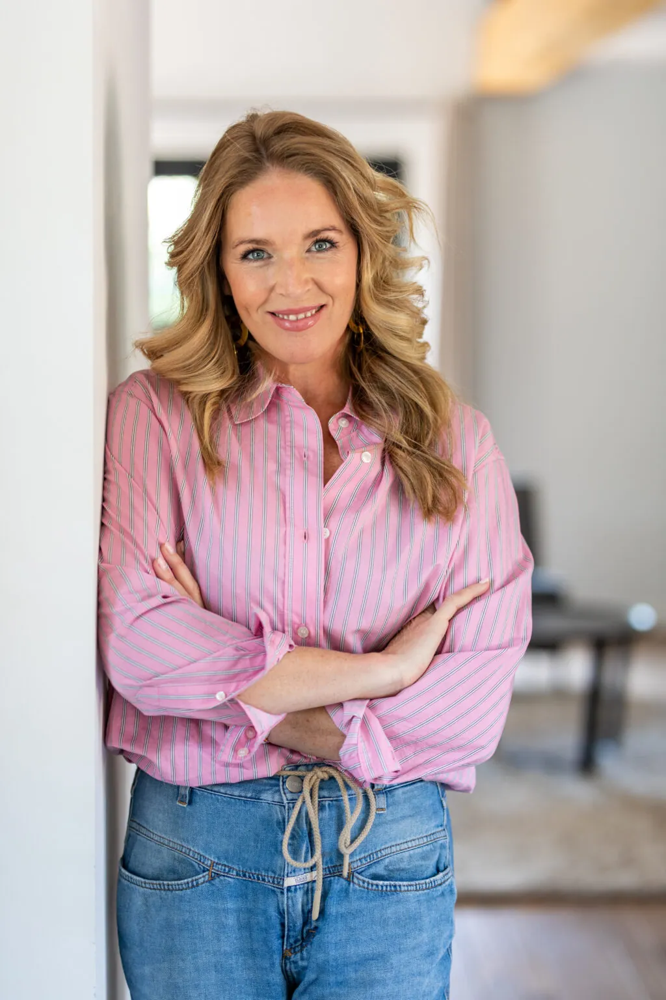
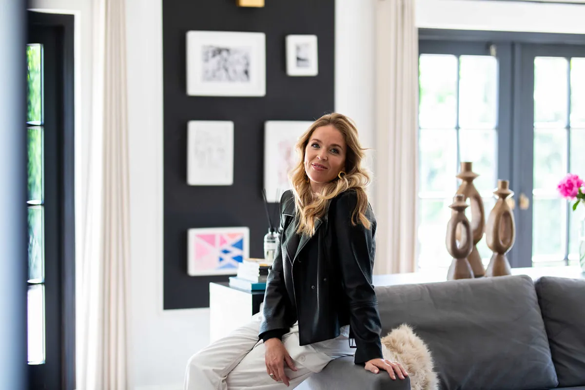

Van overleven naar leven in balans, regie en verbinding
Welkom, ik ben Deborah van der Burg — relatietherapeute, coach en gids voor mensen die vastlopen in hun relaties, zichzelf of hun werk.

Vanuit mijn praktijk in Noordwijk help ik professionals en stellen in Zuid-Holland hun patronen doorbreken en authentiek leven. Mijn verhaal begint met een burn-out en eindigt met een missie: iedereen de kans geven op een bewust, lekker en gelukkig leven.
Van corporate executive support naar persoonlijke crisis
18 jaar lang ondersteunde ik CEO's van multinationals bij hun zwaarste uitdagingen. Dagelijks pendelde ik naar de Amsterdamse Zuidas, waar ik teams herstelde, crises oploste en executives coachte onder hoge druk. Tegelijkertijd was ik moeder, echtgenote, vrijwilliger bij de hockey en lid van Ladies Circle — en natuurlijk, zoals "iedere vrouw", verantwoordelijk voor het huishouden.
Mijn drive om het op alle gebieden heel goed te doen, de lat sky high te leggen, niet 100% maar 200% geven — dit was mijn realiteit. Voor minder ging ik niet. Klinkt dit bekend?
De onvermijdelijke burn-out van 2019
Vijf dagen per week Amsterdam, drie dagen kinderen ophalen, een verbouwing, verenigingen, sociaal leven — het was te veel. Maar in plaats van naar mezelf te kijken, wees ik naar de buitenwereld.
De doorbraak: V-Cirkel Academy
Ik had al menig psycholoog gesproken, weinig succesvol. Tot ik de V-Cirkel Academy ontdekte. Voor het eerst werd ik confronterend maar liefdevol geconfronteerd met mijn eigen aandeel. Een waanzinnige eye-opener:
- Van onbewust naar bewust — eindelijk begrijpen waarom ik deed wat ik deed
- Regie, keuze en balans — niet meer als slachtoffer van omstandigheden
- Begrijpen van systemen — hoe ik en mijn omgeving werkten
- Ware communicatie — "je kunt communiceren tot je een ons weegt, maar wanneer je elkaar niet begrijpt is het stille chaos"
Dé sleutel tot ware verbinding: jezelf begrijpen, de wereld van de ander willen begrijpen, naar elkaar luisteren en openstaan voor elkaars wereld.
Waarom mijn ervaring waardevol is voor jou
Een unieke combinatie van corporate expertise en persoonlijke transformatie die weinig coaches hebben.
- 18 jaar executive support — ik ken de druk van het bedrijfsleven
- Persoonlijke burn-out ervaring — ik weet hoe uitputting voelt
- Eigen transformatie — van 200% geven naar bewust leven
- Systemisch begrip — hoe jij en je omgeving werken
- Praktische handvatten — tools die echt werken
Mijn ontwikkeling: continu leren en groeien
EFT-Relatietherapie (2024)
Stichting EFT Nederland — de methodiek van Dr. Sue Johnson. Emotionally Focused Therapy, wetenschappelijk bewezen effectief, met specialisatie in het herstellen van de emotionele verbinding tussen partners (70-73% succes in volledig herstel).
V-Cirkel Topclass Level 4 (2023)
Het hoogste niveau van de V-Cirkel Academy: verfijning van gesprekstechnieken en interventies, diepere psychologie en expertise in complexe coachingsituaties.
Post-HBO Level 2 & 3 (2019-2022)
V-Cirkel Academy — Enneagram-gebaseerde coaching. Subtypes en instincten, organisatorische toepassingen, teamdynamiek, leiderschap en conflictresolutie.
NOBCO Coaching (2013-2014)
Coaching Academy International — geaccrediteerde opleiding, geregistreerd bij NOBCO/EMCC. De basis voor professioneel coachen en leidinggevende ontwikkeling.
Preventie als sleutel
Ik geloof dat preventie de sleutel is tot gezonde relaties en persoonlijk welzijn. Door vroegtijdig te investeren in zelfkennis voorkom je dat kleine problemen uitgroeien tot grote crises.
Te vaak zie ik dat mensen wachten tot het te laat is — tot ze zelf overspannen of burn-out zijn, of de schade in hun relatie zo groot is dat herstel bijna onmogelijk lijkt. Daarom richt ik me op vroege signaalherkenning en het ontwikkelen van duurzame vaardigheden — zodat je niet alleen een crisis oplost, maar er een krijgt die niet terugkomt.

Waar transformatie plaatsvindt
Een rustige, warme praktijkruimte in het hart van de Bollenstreek. Weg van de werkstress en stadsdrukte — een plek voor reflectie, privacy en nieuwe inzichten. Ook online coaching is mogelijk voor heel Zuid-Holland.
Mijn praktijk in Noordwijk
Offemweg 47, in het hart van de Bollenstreek — een rustige, natuurlijke omgeving die helpt bij reflectie en mentale ruimte, weg van werkstress en stadsdrukte.
- Noordwijk en kuststreek — lokale verbinding en gemak
- Katwijk — 15 minuten, makkelijk bereikbaar
- Leiden en omgeving — 25 minuten via de A44
- Hillegom en Lisse — hart van de Bollenstreek
- Den Haag en Amsterdam — online coaching beschikbaar